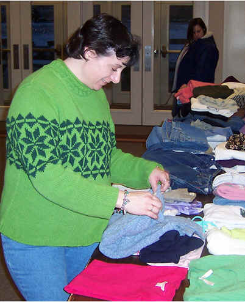

Updates
BLOG: Inconvenient Compassion
I hear a lot of chatter about benevolence and compassionate ministry. People are puzzled about what it looks like.
How do we do it like Jesus did? Questions are asked about how the person in need came to their needy situation.
Some would say they simply need to get ahold of Jesus and their life would go well. Some would say it is our job to
alleviate their suffering. While both may have elements of truth, they both fall short of the Jesus model. Over the
years of studying service and shepherding ministry, I have noticed one consistent theme- Inconvenience.
read more
BLOG: Paradigms of Poverty
The church is that community that contains all the (God given) resources necessary to combat poverty. It is the structure that gives
a literal body to the mission of Jesus in our fallen world. Defining poverty as simply a lack of material goods does an injustice to
the poverty of spirit within the poor. There is foundationally a broken down system that has cultivated broken spirits within the
paradigm of both the person in need and those of us who think ourselves as having enough resources. We fail to see the root of poverty
being fed by the very charitable programs we design to alleviate said poverty.
read more
NEWS: Church charity networks meet today in Richland
Jericho Road Ministries is holding Faith Community Networks, a gathering of church charity providers, today from noon to 1:30 p.m. at
the Cathedral of Joy on Gage Boulevard in Richland. Benevolence directors from local Christian churches are invited to attend.
read more
NEWS: Demand for food boxes inundates Richland nonprofit
Twenty families waited an hour in the lobby of Richland's Jericho Road Ministries to register for Thanksgiving food boxes and Christmas
gifts. Amy Schultz, the nonprofit's executive director, said they were overwhelmed with well over last year’s numbers in just two hours.
read more